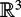

|
| |||||||||||||
|
|
||
The PRM planner is described in [231]. The planner resulted from the work of independent groups [225,226,344,345,404] and was further developed in [221,223,227,228]. PRM divides planning into two phases: the learning phase, during which a roadmap in is built; and the query phase, during which user-defined query configurations are connected with the precomputed roadmap. The nodes of the roadmap are configurations in and the edges of the roadmap correspond to free paths computed by a local planner. The objective of the first phase is to capture the connectivity of so that path-planning queries can be answered efficiently.
The basic PRM algorithm presented below can be used to solve high-dimensional problems such as the one in figure 7.1. It has been shown to be probabilistically complete [221,229,252]. In this section, the choices for the sampling and connection strategies of PRM are reduced to a bare minimum to facilitate the presentation. The emphasis here is to describe a planner that is easy to implement and works well even with rather high-dimensional problems (5-12 degrees of freedom).
The basic PRM algorithm first constructs a roadmap in a probabilistic way for a given workspace. The roadmap is represented by an undirected graph G = (V, E). The nodes in V are a set of robot configurations chosen by some method over . For the moment, assume that the generation of configurations is done randomly from a uniform distribution. The edges in E correspond to paths; an edge (q1, q2) corresponds to a collision-free path connecting configurations q1 and q2. These paths, which are referred to as local paths, are computed by a local planner. In its simplestform, the local planner connects two configurations by the straight line in , if such a line exists.
In the query phase, the roadmap is used to solve individual path-planning problems. Given an initial configuration qinit and a goal configuration qgoal, the method first tries to connect qinit and qgoal to two nodes q′ and q″, respectively, in V. If successful, the planner then searches the graph G for a sequence of edges in E connecting q′ to q″. Finally, it transforms this sequence into a feasible path for the robot by recomputing the corresponding local paths and concatenating them. Local paths can be stored in the roadmap but this would increase the storage requirements of the roadmap, a topic which is discussed later in this section.
The roadmap can be reused and further augmented to capture the connectivity of . Although the learning phase is usually performed before any path-planning query, the two phases can also be interwoven. It is reasonable to spend a considerable amount of time in the learning phase if the roadmap will be used to solve many queries.
To make the presentation more precise, let
Δbe the local planner that on input returns either a collisionfree path from q to q′ or NIL if it cannot find such a path. Assume for the moment that Δ is symmetric and deterministic.
dist be a function , called the distance function, usually a metric on .
Algorithm 6 describes the steps of the roadmap construction. For all algorithms described in this chapter, it should be noted that only the main steps are given and that implementation details are missing.
Initially, the graph G = (V, E) is empty. Then, repeatedly, a configuration is sampled from . For the moment, assume that the sampling is done according to a uniform random distribution on . If the configuration is collision-free, it is added to the roadmap. The process is repeated until n collision-free configurations have been sampled. For every node q ∊ V, a set Nq of k closest neighbors to the configuration q according to some metric dist is chosen from V. The local planner is called to connect q to each node q′ ∊ Nq. Whenever Δ succeeds in computing a feasible path between q and q′, the edge (q, q′) is added to the roadmap. Figure 7.3 shows a roadmap constructed for a point robot in a two-dimensional Euclidean workspace, where Δ is a straight-line planner.
Input: n : number of nodes to put in the roadmap k : number of closest neighbors to examine for each configuration Output: A roadmap G = (V, E) 1: V ← 2: E ← 3: while |V | < n do 4: repeat 5: q ← a random configuration in6: until q is collision-free 7: V ← V ∪{q} 8: end while 9: for all q ∊ V do 10: Nq ← the k closest neighbors of q chosen from V according to dist 11: for all q′ ∊ Nq do 12: if (q, q′) ∉ E and Δ(q, q′) ≠ NIL then 13: E ← E ∪{(q, q′)} 14: end if 15: end for 16: end for
A number of components in algorithm 6 are still unspecified. In particular, it needs to be defined how random configurations are created in line (5), how the closest neighbors are computed in line (10), how the distance function dist used in line (10) is chosen, and how local paths are generated in line (12).
During the query phase, paths are found between arbitrary input configurations qinit and qgoal using the roadmap constructed in the learning phase. Algorithm 7 illustrates this process.
Assume for the moment that is connected and that the roadmap consists of a single connected component. The main question is how to connect qinit and qgoal to the roadmap. Queries should terminate as quickly as possible, so an inexpensive algorithm is desired here. The strategy used in algorithm 7 to connect qinit to the roadmap is to consider the k closest nodes in the roadmap in order of increasing distance from qinit, according to the metric dist, and try to connect qinit to each of them with the local planner until one connection succeeds. The number of closest neighbors considered in algorithm 7 can be different from the one in algorithm 6. The same procedure is used to connect qgoal to the roadmap.
If the connection of qinit and qgoal to the roadmap is successful, the shortest path is found on the roadmap between qinit and qgoal according to dist (e.g., using Dijkstra's algorithm or the A* algorithm). If one wishes, this path may be improved by running a smoothing postprocessing algorithm. Figure 7.4 shows the solution to a query solved with the roadmap from figure 7.3.
In general, the roadmap may consist of several connected components. This is very likely when is itself not connected, but it may also happen when is connected, and the roadmap has not managed to capture the connectivity of . If the roadmap contains several components, algorithm 7 can be used to connect both qinit and qgoal to two nodes in the same connected component of the roadmap, e.g., by giving it as input a single connected component of G. All components of G should be considered. If the connection of qinit and qgoal to the same connected component of the roadmap succeeds, a path is constructed as in the single-component case. The method returns failure if it cannot connect both qinit and qgoal to the same roadmap component.
Input: qinit: the initial configuration qgoal: the goal configuration k: the number of closest neighbors to examine for each configuration G = (V, E): the roadmap computed by algorithm 6 Output: A path from qinit to qgoal or failure 1: Nqinit ← the k closest neighbors of qinit from V according to dist 2: Nqgoal ← the k closest neighbors of qgoal from V according to dist 3: V ←{qinit}∪{qgoal}∪ V 4: set q′ to be the closest neighbor of qinit in Nqinit 5: repeat 6: if Δ(qinit, q′) ≠ NIL then 7: E ← (qinit, q′) ∪ E 8: else 9: set q′ to be the next closest neighbor of qinit in Nqinit 10: end if 11: until a connection was succesful or the set Nqinit is empty 12: set q′ to be the closest neighbor of qgoal in Nqgoal 13: repeat 14: if Δ(qgoal, q′) ≠ NIL then 15: E ← (qgoal, q′) ∪ E 16: else 17: set q′ to be the next closest neighbor of qgoal in Nqgoal 18: end if 19: until a connection was succesful or the set Nqgoal is empty 20: P ← shortest path(qinit, qgoal, G) 21: if P is not empty then 22: return P 23: else 24: return failure 25: end if
If path-planning queries fail frequently, the roadmap may not adequately capture the connectivity of . When this occurs, the current roadmap can be extended by resuming the construction step algorithm (exclude lines (1) and (2) from algorithm 6 and pass as a parameter the current roadmap). It should be emphasized again that in this section we present a very basic PRM. It has been observed for example, that when trying to connect components biased sampling may be particularly effective [231]. Biased sampling (see Connection Sampling in section 7.1.3) increases the sampling density in areas of  that have good chances to facilitate component connection.
that have good chances to facilitate component connection.
So far, it has been assumed that Δ is symmetric and deterministic. It is also possible to use a local planner Δ that is neither symmetric nor deterministic.
In many cases, connecting some configuration q to some configuration q′ does not necessarily imply that the opposite can be done. If the local planner takes the robot from q to q′ and the robot can also execute the path in reverse to go from q′ to q, the roadmap is an undirected graph. Adding the edge (q, q′) implies that the edge (q′, q) can also be added. If local paths cannot be reversed, a directed roadmap must be constructed. A separate check must be performed to determine if the edge (q′, q) can also be added to the roadmap.
A deterministic local planner will always return the same path between two configurations and the roadmap does not have to store the local path between the two configurations in the corresponding edge. The path can be recomputed if needed to answer a query. On the other hand, if a nondeterministic local planner is used, the roadmap will have to associate with each edge the local path computed by Δ. In general, the use of nondeterministic local planners increases the storage requirements of the roadmap. It permits, however, the use of more powerful local planners, which can be an advantage in certain cases as discussed in section 7.3.
One of the advantages of the basic PRM algorithm presented in the previous section is that it is easy to implement and performs well for a variety of problems. This section focuses on the details of a successful implementation of basic PRM that scales well for robots with many degrees of freedom. Issues that relate to a practical implementation of a planner, such as smoothing of the final path, are also discussed. These issues pertain to all planners in this chapter. The reader is also referred to [246] for details on implementation details and potential pitfalls.
In basic PRM [231] the nodes of the roadmap constitute a uniform random sampling of . To obtain a configuration, each translational degree of freedom can be drawn from the interval of allowed values of the corresponding degree of freedom using the uniform probability distribution over this interval. The same principle applies to rotational degrees of freedom but care should be taken not to favor specific orientations because of the representation used (see the example at the end of section 7.1.2 and [246]). The main idea is that the sampling distribution should be symmetry invariant. The sampled configuration is checked for collision. If it is collision-free, the sample is added to the nodes of the roadmap; otherwise, it is discarded. Collision checking can be done using a variety of existing general techniques, as mentioned above.
Sampling from a uniform distribution is the simplest method for generating sample configurations, but other methods could be used, as we describe below. Section 7.4 offers a theoretical explanation of why sampling from a uniform distribution works well for many problems.
Another important choice to be made is that of selecting the set Nq of closest neighbors to a configuration q. Many data structures have been proposed in the field of computational geometry that deal with the problem of efficiently calculating the closest neighbors to a point in a d-dimensional space. A relatively efficient method both in terms of space and time is the kd-tree data structure [124].
A d-dimensional kd-tree uses as input a set S of n points in d dimensions and constructs a binary tree that decomposes space into cells such that no cell contains too many points. A kd-tree is built recursively by splitting S by a plane into two subsets of roughly equal size: Sℓ, which includes points of S that lie to the left of the plane; and Sr, which includes the remaining points of S. The plane is stored at the root, and the left and right child are recursively constructed with input Sℓ and Sr, respectively. Figure 7.5 illustrates the construction of a 2-dimensional kd-tree for ten points on a plane.
A kd-tree for a set of n points in d dimensions uses O(dn) storage and can be built in O(dn log n) time. A rectangular range query takes time, where m is the number of reported neighbors. As d grows large, the cost of using kd-trees becomes linear. The rectangular range query time can be reduced considerably by introducing a small approximation error. This modified approach is called Approximate Nearest Neighbor queries (ANN) and is becoming increasingly popular [30].
Function dist is used to resolve the k closest neighbors query. It should be defined so that, for any pair (q′, q″) of configurations, dist(q′, q″) reflects the likelihood that the local planner will fail to compute a collision-free path between these configurations. One possibility is to define dist(q′, q″)as some measure of the workspace region swept by the robot, such as the area or the volume, when it moves in the absence of obstacles along the path Δ(q′, q″). Intuitively, minimizing the swept volume, will minimize the chance of collision with the obstacles. An exact computation of swept areas or volumes is notoriously difficult, which is why heuristic metrics generally attempt to approximate the swept-volume metric (see [19,246]).
An approximate and inexpensive measure of the swept-region can be constructed as follows. The robot's configurations q′ and q″ can be mapped to points in a Euclidean space, emb(q′) and emb(q″), respectively, and the Euclidean distance between them can be used, i.e.,
A practical choice for the embedding function is to select p > 0 points on the robot, concatenate them, and create a vector whose dimension is p multiplied by the dimension of the workspace of the robot. In order to represent a configuration q in the embedded space, the set of transformations corresponding to this configuration is applied to the p points, and emb(q) is obtained. Distances can be easily defined using the equation above. An example is given at the very end of this section. Note, however, that this choice of embeddings has its shortcomings. In particular, it is not clear what the number p should be. It is also not clear how to choose p points so that the exact shape of the robot is taken into account. Furthermore, as is the case with the swept-volume metric, the embedding does not take into account obstacles. So even when two configurations are close to one another, connecting them may be impossible due to obstacles.
For the case of rigid body motion, an alternative solution is to split dist into two components, one that expresses the distance between two configurations due to translation and one due to orientation. For example, if X and R represent the translation and rotation components of the configuration q = (X, R) ∊ SE(3) respectively, then
is a weighted metric with the translation component ||X′ − X″|| using a standard Euclidean norm, and the positive scalar function f(R′, R″) returning typically an approximate measure of the distance between the rotations R′, R″ ∊ SO(3). The rotation distance is scaled relative to the translation distance via the weights wt and wr. A reasonable choice of f(R′, R″) is the length of the geodesic curve between R′ and R″. The selection of an appropriate rotation distance function f(R′, R″) depends on the representation for the orientation of the robot, such as Euler angles or quaternions.
One of the difficulties with this method is deciding proper weight values. Furthermore, the extension to articulated bodies is not straightforward. A thorough discussion of metrics for rigid body planning is given in [246].
The choices for the embedding, its dimensionality, and the dist can have a great effect on the efficiency of the PRM algorithm. Different problems may require different approaches and there is great interest in the motion-planning community in finding appropriate metrics [19,246] and embeddings for interesting instances of the generalized mover's problem.
In section 7.1, it was assumed that is symmetric and deterministic. This is a design decision and it is possible to accommodate planners that are nondeterministic, and/or not symmetric.
Another important design decision is related to how fast the local planner should be. There is clearly a tradeoff between the time spent in each individual call of this planner and the number of calls. If a powerful local planner is used, it would often succeed in finding a path when one exists. Hence, relatively few nodes might be required to build a roadmap capturing the connectivity of sufficiently well to reliably answer path-planning queries. Such a local planner would probably be rather slow, but this could be somewhat compensated by the small number of calls needed. On the other hand, a very fast planner is likely to be less successful. It will require more configurations to be included in the roadmap and as a result, the local planner is called more times for the connections between nodes. Each call will be cheaper, however. In section 7.3, a roadmap technique that uses a powerful local planner is discussed.
The choice of the local planner also affects the query phase. It is important to be able to connect any given qinit and qgoal configurations to the roadmap or to detect very quickly that no such connection is possible. This requires that the roadmap be dense enough that it always contains at least some nodes to which it is easy to connect qinit and qgoal. It thus seems preferable to use a very fast local planner, even if it is not too powerful, and build large roadmaps with configurations widely distributed over . In addition, if the local planner is very fast, the same planner can be used to connect qinit and qgoal to the roadmap at query time. Discussions of the use of different local planners can be found in [14,162,203,221].
One popular planner, applicable to all holonomic robots, connects any two given configurations by a straight-line segment in and checks this line segment for collision. Care should be taken to interpolate the translation and rotation components separately (see [246]). There are two commonly-used choices for collision checking, the incremental and the subdivision collision-checking algorithms. In both cases, the line segment, or more generally, any path generated by the local planner between configurations q' and q?, is discretized into a number of configurations (q1, ..., qℓ), where q′ = q1 and q″ = qℓ. The distance between any two consecutive configurations qi and qi+1 is less than some positive constant step_size. This value is problem specific and is defined by the user. It is important to note that again sampling is used to determine if a local path is collision-free. But in this case, sampling is done at a much finer level than was done for node generation and this is a very important feature of PRM. In general, the value of step_size needs to be very small to guarantee that all collisions are found.
In the case of incremental collision checking, the robot is positioned at q′ and moved at each step by step_size along the straight line in between q′ and q″. A collision check is performed at the end of each step. The algorithm terminates as soon as a collision is detected or when q″ is reached.
In the case of the subdivision collision checking, the middle point qm of the straight line in between q′ and q″ is first checked for collision. Then the algorithm recurses on the straight lines between (q′, qm) and (qm, q″). The recursion halts when a collision is found or the length of the line segment is less then step_size.
In both algorithms, the path is considered collision-free if none of the intermediate configurations yields collision. Neither algorithm has a clear theoretical advantage over the other, but in practice the subdivision collision checking algorithm tends to perform better [162, 367]. The reason is that, in general, shorter paths tend to be collision-free. Subdivision collision checking cuts down the length of the local path as soon as possible. It is also possible to use an adaptive subdivision collision-checking algorithm that dynamically adjusts step_size. In [376], step_size is determined by relating the distance between the robot and the workspace obstacles to the maximum length of the path traced out by any point on the robot. Furthermore, the method in [376] is exact, i.e., it always finds a collision when a collision exists, whereas the above discretization techniques may miss a collision if step_size is too large.
Figure 7.6 illustrates how the incremental and subdivision collision-checking algorithms are sampling the straight line between two configurations q′ and q″. In this example, the subdivision algorithm performs a smaller number of collision checks. If the obstacle had been close to q′, then the incremental algorithm would have performed a smaller number of collision checks.
A postprocessing step may be applied to the path connecting qinit to qgoal to improve its quality according to some criteria. For example, shortness and smoothness might be desirable. Postprocessing is applicable to any path-planning algorithm, but is presented here for completeness of the implementation guidelines of the basic PRM.
From a given path, a shorter path could be obtained by checking whether nonadjacent configurations q1 and q2 along the path can be connected with the local planner. This idea has been described often in the literature (e.g., [150, 383]). The points q1 and q2 could be chosen randomly. Another alternative would be a greedy approach. Start from qinit and try to connect directly to the target qgoal.If this step fails, start from the configuration after qinit and try again. Repeat until a connection can be made to qgoal, say from the point q0. Now set the target to q0 and begin again, trying to connect from qinit to q0, and repeat the procedure. This procedure can also be applied toward the opposite direction. Figure 7.7 illustrates the application of the greedy approach in the forward direction to shorten a path in a two-dimensional Euclidean workspace.
There are various reasons why configurations q1 and q2 along a path may have not been connected with an edge from the roadmap construction step of PRM. They may not be close according to the distance function dist, and the k closest neighbor query may not return them as neighbors. They may, however, be in a relatively uncluttered part of and a long edge connecting them may still be possible. These cases will occur more frequently if the Creating Sparse Roadmaps connection strategy has been used (see section 7.1.4).
Instead of shortening the path, a different objective may be to get a path with smooth curvature. A possible approach to this is to use interpolating curves, such as splines, and use the configurations that have been computed by PRM as the interpolation points for the curves. In this case, collision checking is performed along the curves until curves that satisfy both the smoothness properties and the collision avoidance criteria are found.
Postprocessing steps such as path shortening and path smoothing can improve the quality of the path, but can also impose a significant overhead on the time that it takes to report the results of a query. In general, if paths with certain optimality criteria are desired, it is worth trying to build these paths during the roadmap construction phase of PRM. For example, a large dense roadmap will probably yield shorter paths than a smaller and sparser roadmap.
Figure 7.8(a) shows a motion-planning problem for a robot in a three-dimensional workspace. The robot is a rigid nonconvex polyhedral object; it can freely translate and rotate in the workspace as long as it does not collide with the obstacles. The workspace is made up of a rigid thin wall that has a narrow passage. A bounding box is defined that contains the wall and is small enough so that it does not allow the robot to move from one side of the wall to the other without going through the narrow passage. The goal is to build a roadmap that a planner can use to successively solve motion-planning queries where qinit and qgoal appear on the two different sides of the wall.
The problem has six degrees of freedom, three translational and three rotational. The configuration q = (p, r) of the robot can be represented by a point p expressing the translational component and a quaternion r (see appendix E) expressing the rotational component. A configuration is generated by picking at random a sample from a uniform distribution from a subset of allowable positions in  and picking a random axis of rotation and a random angle for the quaternion (for details see [246]).
In order to find the k closest neighbors of a configuration, configurations are embedded in a space where Euclidean distance is defined. A method that works well in practice is to choose a pair of points on the surface of the robot that have maximum distance and construct a six-dimensional vector emb(q) for the robot's initial configuration. If q′ is obtained by applying a translation and rotation transformation to q, then emb(q′) is obtained by applying the same transformations to the pair of points in emb(q). The distance metric dist is then defined as the Euclidean distance of the two embeddings.
For every configuration and its k closest counterparts, the subdivision collision-checking algorithm is used to check if the straight line in  is collision-free. Intermediate configurations between q′ = (p′, r′) and q″ = (p″, r″) are obtained by performing linear interpolations on p′ and p″ and spherical interpolations on r′ and r″. The edge (q′, q″) is added to the roadmap when all the intermediate configurations are collision-free.
is collision-free. Intermediate configurations between q′ = (p′, r′) and q″ = (p″, r″) are obtained by performing linear interpolations on p′ and p″ and spherical interpolations on r′ and r″. The edge (q′, q″) is added to the roadmap when all the intermediate configurations are collision-free.
When the roadmap has been completed, it can be used to solve user-specified queries. The k closest neighbors for the query points are calculated and the local planner attempts to connect qinit and qgoal to them. As soon as they are connected to the same component, an A* algorithm is run on the graph to find the path. Figure 7.8(b) shows intermediate configurations of a path returned by the above procedure.
Several node-sampling strategies have been developed over the years for PRM. For many path-planning problems, a surprisingly large number of general sampling schemes will provide reasonable results (see e.g., the comparison of sampling schemes given in [162]). The analysis of section 7.4 provides some insight as to why this is the case. Intuitively, many planning problems in the physical world are difficult but not "pathological" (as in the kind of problem one encounters in NP-hardness proofs). Without doubt, however, the choice of the node-sampling strategy can play a significant role in the performance of PRM. This was observed in the original PRM publications which suggested mechanisms to generate samples in a non-uniform way [231]. Increasing the density of sampling in some areas of the free space is referred to as importance sampling and has been repeatedly demonstrated to increase the observed performance of PRM. In this section we describe several node-sampling schemes.
The uniform random sampling used in early work in PRM is the easiest sampling scheme to implement. As a random sampling method, it has the advantage that, in theory, a malicious opponent cannot defeat the planner by constructing carefully crafted inputs. It has the disadvantage, however, that, in difficult planning examples, the running time of PRM might vary across different runs. Nevertheless, random sampling works well in many practical cases involving robots with a large number of degrees of freedom.
There exist cases where uniform random sampling has poor performance. Often, this is the result of the so-called narrow passage problem. If a narrow passage exists in and it is absolutely necessary to go through that passage to solve a query, a sampling-based planner must select a sample from a potentially very small set in order to answer the planning query. A number of different sampling methods have been designed with the narrow passage problem in mind and are described below. The narrow passage problem still remains a challenge for PRM planners and is an active area of research.
The remainder of this section describes sampling strategies that have been developed with the narrow passage problem in mind and then other general sampling strategies. We conclude the section with a brief discussion of how one might select an appropriate sampling scheme for a particular problem.
Obstacle-based sampling methods sample near the boundary of configuration-space obstacles. The motivation behind this kind of sampling is that narrow passages can be considered as thin corridors in surrounded by obstacles.
OBPRM [18] is one of the first and very successful representatives of obstacle-based sampling methods. Initially, OBPRM generates many configurations at random from a uniform distribution. For each configuration qin found in collision, it generates a random direction v, and the planner finds a free configuration qout in the direction v. Finally, it performs a simple binary search to find the closest free configuration q to the surface of the obstacle. Configuration q is added to the roadmap, while qin and qout are discarded.
The Gaussian sampler [59] addresses the narrow passage problem by sampling from a Gaussian distribution that is biased near the obstacles. The Gaussian distribution is obtained by first generating a configuration q1 randomly from a uniform distribution. Then a distance step is chosen according to a normal distribution to generate a configuration q2 at random at distance step from q1. Both configurations are discarded if both are in collision or if both are collision-free. A sample is added to the roadmap if it is collision-free and the other sample is in collision.
In [194], samples are generated in a dilated by allowing the robot to penetrate by some small constant distance into the obstacles. The dilation of widens narrow passages, making it easier for the planner to capture the connectivity of the space. During a second stage, all samples that do not lie in are pushed into by performing local resampling operations.
The bridge planner [193] uses a bridge test to sample configurations inside narrow passages. In a bridge test, two configurations q′ and q″ are sampled randomly from a uniform distribution in . These configurations are considered for addition to the roadmap, but if they are both in collision, then the point qm halfway between them is added to the roadmap if it is collision free. This is called a bridge test because the line segment between q′ and q″ resembles a bridge with q′ and q″ inside obstacles acting as piers and the midpoint qm hovering over . Observe that the geometry of narrow passages makes the construction of short bridges easy, while in open space the construction of short bridges is difficult. This allows the bridge planner to sample points inside narrow passages by favoring the construction of short bridges.
An efficient solution to the narrow passage problem would generate samples that are inside narrow passages but as far away as possible from the obstacles. The Generalized Voronoi Diagrams (GVDs) described in chapter 5 have exactly this property. Although exact computation of the GVD is impractical for high-dimensional configuration spaces, it is possible to find samples on the GVD without computing it explicitly. This can be done by a retraction scheme [427]. The retraction is achieved by a bisection method that moves each sample configuration until it is equidistant from two points on the boundary of .
A simpler approach is to compute the GVD of the workspace and generate samples that somehow conform to this GVD [155,171,191]. For example, the robot can have some predefined handle points (e.g., end-points of the longest diameter of the robot) and sampling can place those handle points as close to the GVD as possible with the hope of aligning the whole robot with narrow passages. The disadvantage of workspace-GVD sampling is that it is in general difficult to generate configurations of the robot close to the GVD (details are given in [155, 171, 191]). The advantage of workspace-GVD sampling is that the GVD captures well narrow passages in the workspace that typically lead to narrow passages in . Additionally, an approximation of the GVD of the workspace can be computed efficiently using graphics hardware [352] which is one of the reasons why this sampling method is popular for virtual walkthroughs and related simulations.
The goal of the visibility-based PRM [337] is to produce visibility roadmaps with a small number of nodes by structuring the configuration space into visibility domains. The visibility domain of a configuration q includes all configurations that can be connected to q by the local planner. This planner, unlike PRM which accepts all the free configurations generated in the construction stage, adds to the roadmap only those configurations q that satisfy one of two criteria: (1) q cannot be connected to any existing node, i.e., q is a new component, or (2) q connects at least two existing components. In this way, the number of configurations in the roadmap is kept small.
Manipulability-based sampling [281, 282] is an importance-sampling approach that exploits the manipulability measure associated with the manipulator Jacobian [432]. Intuitively, manipulability characterizes the arm's freedom of motion for a given configuration. The motivation for using manipulability as a bias for sampling is as follows. In regions of the configuration space where manipulability is high, the robot has great dexterity, and therefore relatively fewer samples should be required in these areas. Regions of the configuration space where manipulability is low tend to be near (or to include) singular configurations of the arm. Near singularities, the range of possible motions is reduced, and therefore such regions should be sampled more densely.
Let J(q) denote the manipulator Jacobian matrix (i.e., the matrix that relates velocities of the end effector to joint velocities). For a redundant arm (e.g., an arm with more than six joints for a 3D workspace) the manipulability in configuration q is given by
| (7.1) |
|
To bias sampling, an approximation to the cumulative density function (CDF) for ω is created. Samples are then drawn from a uniform density on the configuration space, and rejected with probability proportional to the associated CDF value of their manipulability value.
A number of deterministic (sometimes called quasirandom) alternatives to random sampling have been used [62,269,291,292]. These alternatives were first introduced in the context of Monte Carlo integration and aim to optimize various properties of the distribution of the samples. Before discussing some of these alternatives, we briefly describe two ways to evaluate a set of samples.
Let P be a set of point samples on some space X, and N be the number of points in P. One way to evaluate the quality of the samples in P is to assess how "uniformly" the points in P cover X. This is done with respect to a specific collection of subsets of X, called a range space, denoted by . Let be the set of all axis-aligned rectangular subsets of X, and define μ to be the measure (or volume) of a set. Since P contains N points, the difference between the relative volumes of R to X and the fraction of samples contained in is given by
If we take the supremum of this difference over all we obtain the concept of discrepancy.
The discrepancy of point set P with respect to range space over some space X is defined as
It is not necessary to take as the subset of axis-aligned rectangles, but this choice gives an intuitive understanding of discrepancy. Another common choice is to take as the set of d-balls, i.e., for each we have R ={x′ | ||x − x′|| < ∊}, for some point x and radius ∊ > 0.
While discrepancy provides a measure of how uniformly points are distributed over the space X, dispersion provides a measure of the largest portion of X that contains no points in P. For a given metric ρ, the distance between a point x ∊ X and a point p ∊ P is given by ρ(x, p). Thus, minp∊P ρ(x, p) gives the distance from x to the nearest point in P. If we take ρ to be the Euclidean metric, this gives the largest empty ball centered on x.Ifwe then take the minimization over all points in X,we obtain the size of the largest empty ball in X. This is exactly the concept of dispersion.
The dispersion δ of point set P with respect to the metric ρ is given by
An important result due to Sukharev gives a bound on the number of samples required to achieve a given dispersion. In particular, the Sukharev sampling criterion states that when ρ is taken as the L∞ norm, a set P of N samples on the d-dimensional unit cube will have
So, to achieve a given dispersion value, say δ*, since N must be an integer, we have

i.e., the number of samples required to achieve a desired dispersion grows exponentially with the dimension of the space. In some sense, this result implies that to minimize dispersion, sampling on a regular grid will yield results that are as good as possible.
Now that we have quantitative measures for the quality of a set of samples, we describe some common ways to generate samples. For the case of X = [0, 1] the Van der Corput sequence gives a set of samples that minimizes both dispersion and discrepancy. The nth sample in the sequence is generated as follows. Let ai ∊{0, 1} be the coefficients that define the binary representation of n,
The nth element of the Van der Corput sequence, Φ(n), is defined as
Figure 7.9(a) shows the first sixteen elements of a Van der Corput sequence.
|
n |
n (binary) |
Φ(n) (binary) |
Φ (n) |
|---|---|---|---|
|
0 |
0 |
0.0 |
0 |
|
1 |
1 |
0.1 |
1/2 |
|
2 |
10 |
0.01 |
1/4 |
|
3 |
11 |
0.11 |
3/4 |
|
4 |
100 |
0.001 |
1/8 |
|
5 |
101 |
0.101 |
5/8 |
|
6 |
110 |
0.011 |
3/8 |
|
7 |
111 |
0.111 |
7/8 |
|
8 |
1000 |
0.0001 |
1/16 |
|
9 |
1001 |
0.1001 |
9/16 |
|
10 |
1010 |
0.0101 |
5/16 |
|
11 |
1011 |
0.1101 |
13/16 |
|
12 |
1100 |
0.0011 |
3/16 |
|
13 |
1101 |
0.1011 |
11/16 |
|
14 |
1110 |
0.0111 |
7/16 |
|
15 |
1111 |
0.1111 |
15/16 |
|
n |
Φ2(n) |
Φ1(n) |
|---|---|---|
|
0 |
0 |
0 |
|
1 |
1/3 |
1/2 |
|
2 |
2/3 |
1/4 |
|
3 |
1/9 |
3/4 |
|
4 |
4/9 |
1/8 |
|
5 |
7/9 |
5/8 |
|
6 |
2/9 |
3/8 |
|
7 |
5/9 |
7/8 |
|
8 |
8/9 |
1/16 |
|
9 |
1/27 |
9/16 |
|
10 |
10/27 |
5/16 |
|
11 |
19/27 |
13/16 |
|
12 |
4/27 |
3/16 |
|
13 |
13/27 |
11/16 |
|
14 |
22/27 |
7/16 |
|
15 |
7/27 |
15/16 |
The Van der Corput sequence can only be used to sample the real line. The Halton sequence generalizes the Van der Corput sequence to d dimensions. Let {bi} define a set of d relatively prime integers, e.g., b1 = 2, b2 = 3, b3 = 5, b4 = 7, .... The integer n has a representation in base bj given by
and Φbj (n) is defined as
The nth sample is then defined by the coordinates pn = (Φb1(n), Φb2(n), ..., Φbd (n)). Figure 7.9(b) shows the first sixteen elements of a Halton sequence for b1 = 2, b2 = 3.
When the range space is a set of axis-aligned rectangular subsets of X, the discrepancy for the Halton sequence is bounded by
When the range space is the set of d−balls, the discrepancy is bounded by
When N is specified, a Hammersley sequence (sometimes called a Hammersley point set, since the number of points is known and finite) achieves the best possible asymptotic discrepancy. The nth point in a Hammersley sequence is obtained by using the first d − 1 coordinates of a point in the Halton sequence, with the ratio n/N as the first coordinate,
Figure 7.10 shows point sets generated using a random number generator (figure 7.10a), a Halton sequence (figure 7.10b), and a Hammersley sequence (figure 7.10c). Each point set contains 1024 points.
The use of quasirandom sequences has the advantage that the running time is guaranteed to be the same for all the runs due to the deterministic nature of the point generation process. The resulting planner is resolution complete. The analysis of section 7.4 also sheds light as to why quasirandom sequences work well. As with any deterministic sampling method however, it is possible to construct examples where the performance of the planner deteriorates. As a remedy, it has been suggested to perturb the sequence [162]. The perturbation is achieved by choosing a random configuration from a uniform distribution in a small area around the sample point being added to the sequence. The area is gradually reduced as more points are added to the sequence. Certain quasirandom sequences can also be seen as generating points in a multiresolution grid in  [269].
[269].
Grid-based planners have appeared in the early planning literature [244,274] but did not use some key abstractions of PRM such as the collision checking primitives. The nodes of a grid can be an effective sampling strategy in the PRM setting. Especially when combined with efficient node connection schemes (see section 7.1.4), they can result in powerful planners for problems arising in industrial settings [52]. A natural wayof using grid-based search in a PRM is to use a rather coarse resolution for the grid and take advantage of the collision-checking abstraction; moving from one grid node q to a neighboring grid node q′ would require collision checking, and hence sampling, at a finer resolution between the nodes. During the query phase, attempts are made to connect qinit and qgoal to nearby grid points. The resolution of the grid that is used to build the roadmap can be progressively increased either by adding points one at a time or by adding an entire hyperplane of samples chosen to fill the largest gap in the existing grid [52]. Of particular interest for path planning is the use of infinite sequences based on regular structures, which incrementally enhance their resolution. Recent work has demonstrated the use of such sequences for building lattices and other regular structures that have an implicit neighborhood structure, which is very useful for PRMs [269,291]. A grid-based path-planning algorithm is resolution complete.
Connection sampling [221, 231] generates samples that facilitate the connection of the roadmap and can be combined with all previously described sampling methods. Typically, if a small number of configurations is initially generated, there may exist a few disconnected components at the end of the construction step. If the roadmap under construction is disconnected in a place where  is not, this place may correspond to some difficult area of , possibly to a narrow passage of . The idea underlying connection sampling is to select a number of configurations from the roadmap that are likely to lie in such regions and expand them. The expansion of a configuration q involves selecting a new free configuration in the neighborhood of q as described below, adding this configuration to the roadmap, and trying to connect it to other configurations of the roadmap in the same manner as in the construction step. The connection sampling step increases the density of the roadmap in regions of that are believed to be difficult. Since the gaps between components of the roadmap are typically located in these regions, the connectivity of the roadmap is likely to increase. Connection sampling thus never creates new components in the roadmap. At worst, it fails to reduce the number of components.
is not, this place may correspond to some difficult area of , possibly to a narrow passage of . The idea underlying connection sampling is to select a number of configurations from the roadmap that are likely to lie in such regions and expand them. The expansion of a configuration q involves selecting a new free configuration in the neighborhood of q as described below, adding this configuration to the roadmap, and trying to connect it to other configurations of the roadmap in the same manner as in the construction step. The connection sampling step increases the density of the roadmap in regions of that are believed to be difficult. Since the gaps between components of the roadmap are typically located in these regions, the connectivity of the roadmap is likely to increase. Connection sampling thus never creates new components in the roadmap. At worst, it fails to reduce the number of components.
A simple probabilistic scheme can be used for connection sampling. Each configuration q is associated with a heuristic measure of the difficulty of the region around q expressed by a positive weight w(q). Thus, w(q) is large whenever q is considered to be in a difficult region. Weights are normalized so that their sum for all configurations in the roadmap is one. Then, repeatedly, a configuration q is selected from the roadmap with probability
and then q is expanded. The weights can be computed only once at the beginning of the process and not modified when new configurations are added to the roadmap, or can be modified periodically.
There are several ways to define the heuristic weight w(q) [221,231]. A function that has been found to work well in practice is the following. Let deg(q)be the number of configurations to which q is connected. Then,
The expansion of a configuration q requires the generation of a configuration in the neighborhood of q. Typically, such a configuration can be found easily by selecting values for the degrees of freedom of the robot within a small interval centered at the values of the corresponding degrees of freedom of q. If this fails, a small randombounce walk may be used to arrive at a new collision-free configuration. For holonomic robots, a random-bounce walk [231] from q consists of repeatedly picking at random a direction of motion and moving in this direction until an obstacle is hit. When a collision occurs, a new random direction is chosen. The above steps are repeated for a number of times. The configuration q′ reached by the random-bounce walk and the edge (q, q′) are inserted into the roadmap. Moreover, the path computed between q and q is explicitly stored, since it was generated by a nondeterministic technique. The fact that q′ belongs to the same connected component as q is also recorded. Then attempts are made to connect q′ to the other connected components of the roadmap in the same way as in the construction step of PRM.
Choosing among different sampling strategies is an open issue. Here, we give some very rough guidelines on how to choose a sampling strategy.
The success of PRM should be partly attributed to the fact that for a large range of problems (difficult but not "pathological" problems-see section 7.4) several simple sampling strategies work well. For example, uniform random sampling works well for many problems found in practice involving 3-7 degrees of freedom. If consistency in the running time is an issue, quasirandom sampling and lattice-based sampling provide some advantages. When the dimension grows, and again for problems that do not exhibit pathological behavior, random sampling is the simplest way to go. When problems that have narrow passages are considered, sampling-based strategies that were designed with narrow passages in mind should be used.
Combinations of different sampling methods are possible and in many cases critical for success. If πA and πB are two different sampling methods, a weighted hybrid sampling method π can be produced by setting π = (1 − w)πA + wπB. For example, connection sampling could be used in combination with random sampling [231] or OBPRM sampling. One sampling strategy can also be considered a filter for another. For example, the Gaussian sampler can be used to filter nodes created according to the bridge test [263].
None of the sampling methods described in this chapter provides clearly the best strategy across all planning problems. Sampling should also be considered in relation with the connection strategy used (see section 7.1.4) and the local planner used (see [14,162,203,221] and section 7.3). Finally, it must be emphasized that it is possible to create "pathological" path-planning instances that will be arbitrarily hard for any sampling-based planner.
An important aspect of PRM is the selection of pairs of configurations that will be tried for connections by a local planner. The objective is to select those configurations for which the local planner is likely to succeed. As has been discussed, one possible choice is to use the local planner to connect every configuration to all of its k closest neighbors. The rationale is that nearby samples lead to short connections that have good chances of being collision free. This section discusses some other approaches, their advantages and disadvantages. Clearly, the function used to select the neighbors and the implemented local planner can drastically affect the performance [19,246] of any connection strategy described in this section.
A method that can speed up the roadmap construction step is to avoid the computation of edges that are part of the same connected component [231,404]. Since there exists a path between any two configurations in a connected component, the addition of the new edge will not improve the connectivity of the roadmap. Several implementations of this idea have been proposed. The simplest is to connect a configuration with the nearest node in each component that lies close enough. This method avoids many calls to the local planner and consequently speeds up the roadmap construction step. As the graph is being built, the connected components can be maintained by using a fast disjoint-set data structure [119].
With the above method, no cycles can be created and the resulting graph is a forest, i.e., a collection of trees. Since a query would never succeed due to an edge that is part of a cycle, it is indeed sensible not to consume time and space computing and storing such an edge. In some cases, however, the absence of cycles may lead the query phase to construct unnecessarily long paths. This drawback can be mitigated by applying postprocessing techniques, such as smoothing, on the resulting path. It has been observed however that allowing some redundant edges to be computed during the roadmap construction phase (e.g., two or three per node) can significantly improve the quality of the original path without significant overhead [162]. Recent work shows how to add useful cycles in PRM roadmaps that result in higher quality (shorter) paths [336].
The roadmap constructed by PRM is aimed at capturing the connectivity of . In some cases, due to the difficulty of the problem or the inadequate number of samples being generated, the roadmap may consist of several connected components. The quality of the roadmap can be improved by employing strategies aimed at connecting different components of the roadmap. Connection sampling, introduced in section 7.1.3, attempts to connect different components of the roadmap by placing more nodes in difficult regions of . Section 7.2 describes sampling-based tree planners that can be very effective in connecting different components of the roadmap. This is exploited in the planner described in section 7.3. Random walks and powerful planners such as RPP [40] can also be used to connect components [221]. Other strategies are described in [323].
The idea behind lazy evaluation is to speed up performance by doing collision checks only when it is absolutely necessary. Lazy evaluation can be applied to almost all the sampling-based planners presented in this chapter [52-54]. In this section, lazy evaluation is described as a node connection scheme. It has also given rise to very effective planners that will be described in the next section.
When lazy evaluation is employed, PRM operates on a roadmap G, whose nodes and paths have not been fully evaluated. It is assumed that all nodes and all edges of a node to its k neighbors are free of collisions. Once PRM is presented with a query, it connects qinit and qgoal to two close nodes of G. The planner then performs a graph search to find the shortest path between qinit and qgoal, according to the distance function used. Then the path is checked as follows. First, the nodes of G on the path are checked for collision. If a node is found in collision, it is removed from G together with all the edges originating from it. This procedure is repeated until a path with free nodes is discovered. The edges of that path are then checked. In order to avoid unnecessary collision checks, however, all edges along the path are first checked at a coarse resolution, and then at each iteration the resolution becomes finer and finer until it reaches the desired discretization. If an edge is found in collision, it is removed from G. The process of finding paths, checking their nodes and then checking their edges is repeated until a free path is found or all nodes of G have been visited. Once it is decided that a node of G is in , this information is recorded to avoid future checks. For the edges, the resolution at which they have been checked for collision is also recorded so that if an edge is part of a future path, collision checks are not replicated. If no path is found and the nodes of G have been exhausted, new nodes and edges can be added to G. The new nodes can be sampled not only randomly but also from the difficult regions of [54]. This kind of sampling is similar to the connection sampling strategy of PRM described in section 7.1.3.
A related lazy scheme [335] assigns a probability to each edge of being collision free. This probability is computed by taking into account the resolution at which the edge has been checked. The edge probabilities can be used to search for a path in G that has good chances of being in .
|
|
||
|